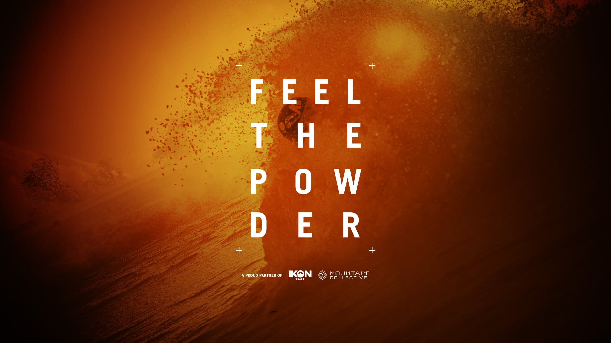
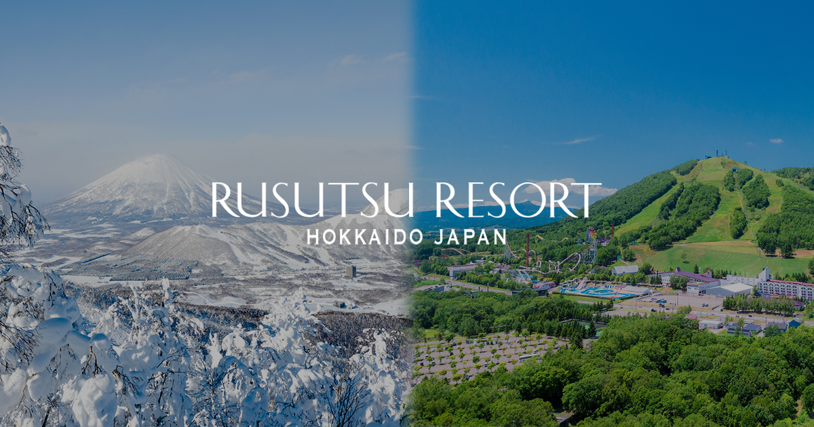
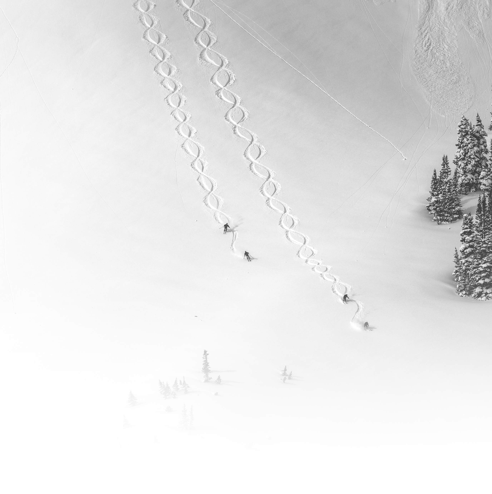
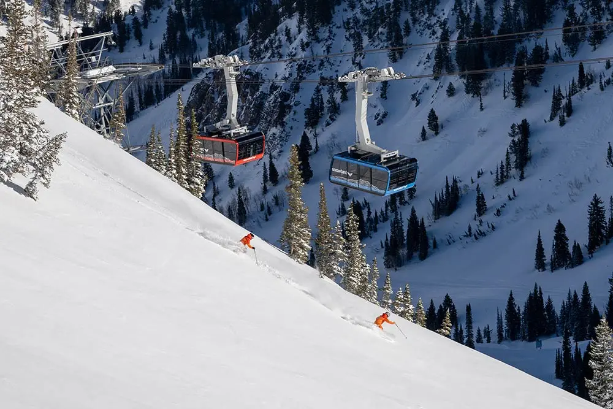
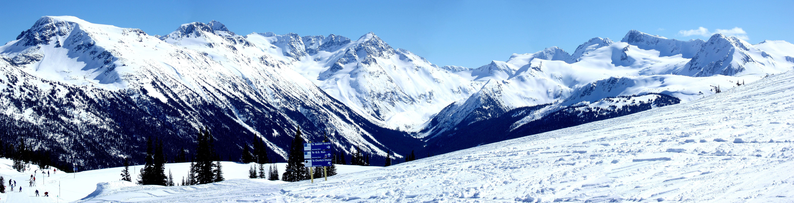
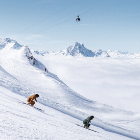
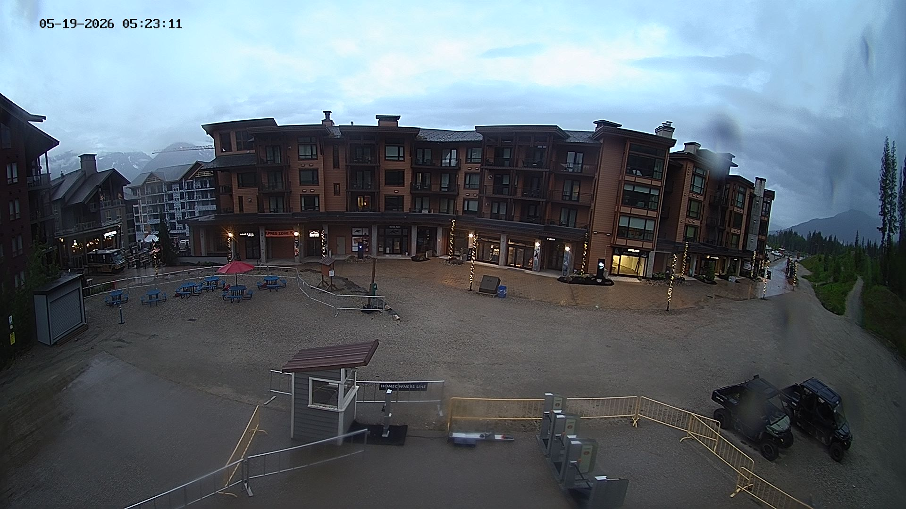

Explore airports, regions, stays, and transfer tradeoffs.
Origins: DTW + GRR. Date window: flexible January. Source-backed options stay visible by default; newly researched Canada routes now include linked transfer and lodging evidence.
ORIGIN AIRPORTS
DTW Detroit
GRR Grand Rapids
ORD optional
RESORT MEDIA
Trail maps, total skiable area, and pictures
Featured resorts now carry official trail-map links, source-backed skiable-area stats, and resort imagery so the map view is more than airport routing.






PASS DESTINATION INVENTORY
Filter researched Epic and Ikon destinations
Source-backed inventory includes 130 current official pass destinations: 55 Epic-only, 75 Ikon-only, and 0 current official overlaps. Overlap is a real zero-state when no destination is tagged with both passes.
Showing all 130 researched pass destinations.
There are no current official destinations tagged with both Epic and Ikon in this researched inventory.
Hastings, MN · gateways MSP
Vail-owned resort; official region page lists Afton Alps, MN.; Captured for pass-location coverage; verify exact pass tier, holiday blackouts, reservations, partner benefit limits, and session-day accounting on official sources.
Elkhorn, WI · gateways MKE, ORD
Vail-owned resort; distinguish from Alpine Valley Ski Area, OH.; Captured for pass-location coverage; verify exact pass tier, holiday blackouts, reservations, partner benefit limits, and session-day accounting on official sources.
Chesterland, OH · gateways CLE
Official page labels this Alpine Valley, OH; app keeps separate name to avoid confusion with Wisconsin resort.; Captured for pass-location coverage; verify exact pass tier, holiday blackouts, reservations, partner benefit limits, and session-day accounting on official sources.
Alta, UT · gateways SLC
Captured for pass-location coverage; verify exact pass tier, holiday blackouts, reservations, partner benefit limits, and session-day accounting on official sources.
Girdwood, AK · gateways ANC
Captured for pass-location coverage; verify exact pass tier, holiday blackouts, reservations, partner benefit limits, and session-day accounting on official sources.
Andermatt, Switzerland · gateways ZRH, GVA
Epic Pass resort; official page says Epic Pass holders also get unlimited access to Disentis.; Captured for pass-location coverage; verify exact pass tier, holiday blackouts, reservations, partner benefit limits, and session-day accounting on official sources.
Iwate Prefecture, Japan · gateways HND, NRT
Captured for pass-location coverage; verify exact pass tier, holiday blackouts, reservations, partner benefit limits, and session-day accounting on official sources.
Niigata Prefecture, Japan · gateways KIJ, HND, NRT
Captured for pass-location coverage; verify exact pass tier, holiday blackouts, reservations, partner benefit limits, and session-day accounting on official sources.
Dillon, CO · gateways DEN, EGE
Captured for pass-location coverage; verify exact pass tier, holiday blackouts, reservations, partner benefit limits, and session-day accounting on official sources.
Aspen, CO · gateways ASE, DEN
Captured for pass-location coverage; verify exact pass tier, holiday blackouts, reservations, partner benefit limits, and session-day accounting on official sources.
Bartlett, NH · gateways PWM, BOS
Vail-owned resort.; Captured for pass-location coverage; verify exact pass tier, holiday blackouts, reservations, partner benefit limits, and session-day accounting on official sources.
Beaver Creek, CO · gateways EGE, DEN
Vail-owned resort.; Captured for pass-location coverage; verify exact pass tier, holiday blackouts, reservations, partner benefit limits, and session-day accounting on official sources.
Big Bear Lake, CA · gateways ONT, LAX
Captured for pass-location coverage; verify exact pass tier, holiday blackouts, reservations, partner benefit limits, and session-day accounting on official sources.
Big Sky, MT · gateways BZN
Captured for pass-location coverage; verify exact pass tier, holiday blackouts, reservations, partner benefit limits, and session-day accounting on official sources.
Blue Mountains, ON · gateways YYZ
Captured for pass-location coverage; verify exact pass tier, holiday blackouts, reservations, partner benefit limits, and session-day accounting on official sources.
Palmerton, PA · gateways ABE, PHL
Captured for pass-location coverage; verify exact pass tier, holiday blackouts, reservations, partner benefit limits, and session-day accounting on official sources.
Peninsula, OH · gateways CLE
Official page groups Boston Mills / Brandywine; app keeps each ski area searchable.; Captured for pass-location coverage; verify exact pass tier, holiday blackouts, reservations, partner benefit limits, and session-day accounting on official sources.
Boyne Falls, MI · gateways TVC, DTW
Captured for pass-location coverage; verify exact pass tier, holiday blackouts, reservations, partner benefit limits, and session-day accounting on official sources.
Sagamore Hills, OH · gateways CLE
Official page groups Boston Mills / Brandywine; app keeps each ski area searchable.; Captured for pass-location coverage; verify exact pass tier, holiday blackouts, reservations, partner benefit limits, and session-day accounting on official sources.
Breckenridge, CO · gateways DEN, EGE
Vail-owned resort.; Captured for pass-location coverage; verify exact pass tier, holiday blackouts, reservations, partner benefit limits, and session-day accounting on official sources.
Brighton, UT · gateways SLC
Captured for pass-location coverage; verify exact pass tier, holiday blackouts, reservations, partner benefit limits, and session-day accounting on official sources.
Tannersville, PA · gateways ABE, PHL
Captured for pass-location coverage; verify exact pass tier, holiday blackouts, reservations, partner benefit limits, and session-day accounting on official sources.
Chamonix-Mont-Blanc, Haute Savoie · gateways GVA
Captured for pass-location coverage; verify exact pass tier, holiday blackouts, reservations, partner benefit limits, and session-day accounting on official sources.
Frisco, CO · gateways DEN, EGE
Destination name normalized to match current official Ikon destination page display.; Captured for pass-location coverage; verify exact pass tier, holiday blackouts, reservations, partner benefit limits, and session-day accounting on official sources.
Queenstown, New Zealand · gateways ZQN
Destination name normalized to match current official Ikon destination page display.; Captured for pass-location coverage; verify exact pass tier, holiday blackouts, reservations, partner benefit limits, and session-day accounting on official sources.
Crans-Montana, Switzerland · gateways GVA, ZRH, MXP
Epic Pass resort.; Captured for pass-location coverage; verify exact pass tier, holiday blackouts, reservations, partner benefit limits, and session-day accounting on official sources.
Crested Butte, CO · gateways GUC, DEN
Vail-owned resort.; Captured for pass-location coverage; verify exact pass tier, holiday blackouts, reservations, partner benefit limits, and session-day accounting on official sources.
Bennington, NH · gateways MHT, BOS
Vail-owned resort.; Captured for pass-location coverage; verify exact pass tier, holiday blackouts, reservations, partner benefit limits, and session-day accounting on official sources.
Enumclaw, WA · gateways SEA
Destination name normalized to match current official Ikon destination page display.; Captured for pass-location coverage; verify exact pass tier, holiday blackouts, reservations, partner benefit limits, and session-day accounting on official sources.
Vancouver, BC · gateways YVR
Captured for pass-location coverage; verify exact pass tier, holiday blackouts, reservations, partner benefit limits, and session-day accounting on official sources.
Park City, UT · gateways SLC
Captured for pass-location coverage; verify exact pass tier, holiday blackouts, reservations, partner benefit limits, and session-day accounting on official sources.
Castelrotto, BZ · gateways VCE, INN
Destination name normalized to match current official Ikon destination page display.; Captured for pass-location coverage; verify exact pass tier, holiday blackouts, reservations, partner benefit limits, and session-day accounting on official sources.
Nederland, CO · gateways DEN
Captured for pass-location coverage; verify exact pass tier, holiday blackouts, reservations, partner benefit limits, and session-day accounting on official sources.
Falls Creek, Australia · gateways MEL, ABX
Epic Australia resort; official page states physical Epic Pass card is required at Australian resorts.; Captured for pass-location coverage; verify exact pass tier, holiday blackouts, reservations, partner benefit limits, and session-day accounting on official sources.
Fernie, BC · gateways YXC, YYC
Resorts of the Canadian Rockies partner access; pass type/access details vary.; Captured for pass-location coverage; verify exact pass tier, holiday blackouts, reservations, partner benefit limits, and session-day accounting on official sources.
Hokkaido, Japan · gateways CTS
Captured for pass-location coverage; verify exact pass tier, holiday blackouts, reservations, partner benefit limits, and session-day accounting on official sources.
Andorra · gateways BCN, TLS
Destination name normalized to match current official Ikon destination page display.; Current official Epic Europe page no longer lists Grandvalira; remains Ikon-only in this inventory.
Wausau, Wisconsin · gateways CWA
Captured for pass-location coverage; verify exact pass tier, holiday blackouts, reservations, partner benefit limits, and session-day accounting on official sources.
Nagano, Japan · gateways HND, NRT
Partner access to Hakuba Valley's 10 ski resorts; Mobile Pass cannot be used for lift access.; Captured for pass-location coverage; verify exact pass tier, holiday blackouts, reservations, partner benefit limits, and session-day accounting on official sources.
South Lake Tahoe, CA / Stateline, NV · gateways RNO, SMF
Vail-owned resort.; Captured for pass-location coverage; verify exact pass tier, holiday blackouts, reservations, partner benefit limits, and session-day accounting on official sources.
Hidden Valley, PA · gateways PIT
Vail-owned resort; distinguish from Hidden Valley, MO.; Captured for pass-location coverage; verify exact pass tier, holiday blackouts, reservations, partner benefit limits, and session-day accounting on official sources.
Wildwood, MO · gateways STL
Vail-owned resort; distinguish from Hidden Valley, PA.; Captured for pass-location coverage; verify exact pass tier, holiday blackouts, reservations, partner benefit limits, and session-day accounting on official sources.
Mount Hotham, Australia · gateways MEL, ABX
Epic Australia resort; official page states physical Epic Pass card is required at Australian resorts.; Captured for pass-location coverage; verify exact pass tier, holiday blackouts, reservations, partner benefit limits, and session-day accounting on official sources.
Hunter, NY · gateways ALB
Vail-owned resort.; Captured for pass-location coverage; verify exact pass tier, holiday blackouts, reservations, partner benefit limits, and session-day accounting on official sources.
Ischgl, Austria · gateways INN, ZRH, MUC
Captured for pass-location coverage; verify exact pass tier, holiday blackouts, reservations, partner benefit limits, and session-day accounting on official sources.
Teton Village, WY · gateways JAC
Captured for pass-location coverage; verify exact pass tier, holiday blackouts, reservations, partner benefit limits, and session-day accounting on official sources.
June Lake, CA · gateways MMH, RNO
Captured for pass-location coverage; verify exact pass tier, holiday blackouts, reservations, partner benefit limits, and session-day accounting on official sources.
Keystone, CO · gateways DEN, EGE
Vail-owned resort.; Captured for pass-location coverage; verify exact pass tier, holiday blackouts, reservations, partner benefit limits, and session-day accounting on official sources.
Golden, BC · gateways YYC, YXC
Resorts of the Canadian Rockies partner access; pass type/access details vary.; Captured for pass-location coverage; verify exact pass tier, holiday blackouts, reservations, partner benefit limits, and session-day accounting on official sources.
Killington, VT · gateways BTV, ALB
Destination name normalized to match current official Ikon destination page display.; Captured for pass-location coverage; verify exact pass tier, holiday blackouts, reservations, partner benefit limits, and session-day accounting on official sources.
Kimberley, BC · gateways YXC, YYC
Resorts of the Canadian Rockies partner access; pass type/access details vary.; Captured for pass-location coverage; verify exact pass tier, holiday blackouts, reservations, partner benefit limits, and session-day accounting on official sources.
Kirkwood, CA · gateways RNO, SMF
Vail-owned resort.; Captured for pass-location coverage; verify exact pass tier, holiday blackouts, reservations, partner benefit limits, and session-day accounting on official sources.
Kitzbühel, Austria · gateways SZG, INN, MUC
Captured for pass-location coverage; verify exact pass tier, holiday blackouts, reservations, partner benefit limits, and session-day accounting on official sources.
Ligonier, PA · gateways PIT
Vail-owned resort.; Captured for pass-location coverage; verify exact pass tier, holiday blackouts, reservations, partner benefit limits, and session-day accounting on official sources.
Petite-Rivière-Saint-François, Quebec · gateways YQB, YUL
Destination name normalized to match current official Ikon destination page display.; Captured for pass-location coverage; verify exact pass tier, holiday blackouts, reservations, partner benefit limits, and session-day accounting on official sources.
Savoie, France · gateways GVA, LYS
Partner resort group covering 7 resorts across 3 valleys; verify pass type limits.; Captured for pass-location coverage; verify exact pass tier, holiday blackouts, reservations, partner benefit limits, and session-day accounting on official sources.
Lincoln, NH · gateways MHT, BOS
Captured for pass-location coverage; verify exact pass tier, holiday blackouts, reservations, partner benefit limits, and session-day accounting on official sources.
Lutsen, Minnesota · gateways DLH, MSP
Destination name normalized to match current official Ikon destination page display.; Captured for pass-location coverage; verify exact pass tier, holiday blackouts, reservations, partner benefit limits, and session-day accounting on official sources.
Zanesfield, OH · gateways CMH
Vail-owned resort.; Captured for pass-location coverage; verify exact pass tier, holiday blackouts, reservations, partner benefit limits, and session-day accounting on official sources.
Mammoth Lakes, CA · gateways MMH, RNO, LAX
Captured for pass-location coverage; verify exact pass tier, holiday blackouts, reservations, partner benefit limits, and session-day accounting on official sources.
Zillertal, Austria · gateways INN, MUC, SZG
Partner resort group; Epic/Epic Adaptive include 5 consecutive days across Mayrhofen and Hintertux.; Verify exact pass tier, blackout dates, reservations, partner benefit limits, and day/session accounting on official sources before purchase.
Megève, France · gateways GVA, LYS
Captured for pass-location coverage; verify exact pass tier, holiday blackouts, reservations, partner benefit limits, and session-day accounting on official sources.
Balwangsan, Pyeongchang, South Korea · gateways ICN
Captured for pass-location coverage; verify exact pass tier, holiday blackouts, reservations, partner benefit limits, and session-day accounting on official sources.
Beaupré, Quebec · gateways YQB, YUL
Resorts of the Canadian Rockies partner access; pass type/access details vary.; Captured for pass-location coverage; verify exact pass tier, holiday blackouts, reservations, partner benefit limits, and session-day accounting on official sources.
West Dover, VT · gateways ALB, BDL
Vail-owned resort.; Captured for pass-location coverage; verify exact pass tier, holiday blackouts, reservations, partner benefit limits, and session-day accounting on official sources.
Newbury, NH · gateways MHT, BOS
Vail-owned resort.; Captured for pass-location coverage; verify exact pass tier, holiday blackouts, reservations, partner benefit limits, and session-day accounting on official sources.
Mount Buller, Australia · gateways MEL
Captured for pass-location coverage; verify exact pass tier, holiday blackouts, reservations, partner benefit limits, and session-day accounting on official sources.
Bend, OR · gateways RDM, PDX
Captured for pass-location coverage; verify exact pass tier, holiday blackouts, reservations, partner benefit limits, and session-day accounting on official sources.
Brighton, MI · gateways DTW
Vail-owned resort.; Captured for pass-location coverage; verify exact pass tier, holiday blackouts, reservations, partner benefit limits, and session-day accounting on official sources.
Gunma Prefecture, Japan · gateways HND, NRT
Captured for pass-location coverage; verify exact pass tier, holiday blackouts, reservations, partner benefit limits, and session-day accounting on official sources.
Niigata Prefecture, Japan · gateways KIJ, HND, NRT
Captured for pass-location coverage; verify exact pass tier, holiday blackouts, reservations, partner benefit limits, and session-day accounting on official sources.
Kananaskis, Alberta · gateways YYC
Resorts of the Canadian Rockies partner access; pass type/access details vary.; Captured for pass-location coverage; verify exact pass tier, holiday blackouts, reservations, partner benefit limits, and session-day accounting on official sources.
Fukushima, Japan · gateways FKS, HND
Captured for pass-location coverage; verify exact pass tier, holiday blackouts, reservations, partner benefit limits, and session-day accounting on official sources.
Hokkaido, Japan · gateways CTS
Captured for pass-location coverage; verify exact pass tier, holiday blackouts, reservations, partner benefit limits, and session-day accounting on official sources.
Truckee, CA · gateways RNO, SMF
Vail-owned resort.; Captured for pass-location coverage; verify exact pass tier, holiday blackouts, reservations, partner benefit limits, and session-day accounting on official sources.
Ludlow, VT · gateways BTV, ALB
Vail-owned resort.; Captured for pass-location coverage; verify exact pass tier, holiday blackouts, reservations, partner benefit limits, and session-day accounting on official sources.
Olympic Valley, CA · gateways RNO, SMF
Captured for pass-location coverage; verify exact pass tier, holiday blackouts, reservations, partner benefit limits, and session-day accounting on official sources.
Panorama, BC · gateways YYC, YXC
Destination name normalized to match current official Ikon destination page display.; Captured for pass-location coverage; verify exact pass tier, holiday blackouts, reservations, partner benefit limits, and session-day accounting on official sources.
Paoli, IN · gateways SDF, IND
Vail-owned resort.; Captured for pass-location coverage; verify exact pass tier, holiday blackouts, reservations, partner benefit limits, and session-day accounting on official sources.
Park City, UT · gateways SLC
Vail-owned resort.; Captured for pass-location coverage; verify exact pass tier, holiday blackouts, reservations, partner benefit limits, and session-day accounting on official sources.
New South Wales, Australia · gateways CBR, SYD
Epic Australia resort; official page states physical Epic Pass card is required at Australian resorts.; Captured for pass-location coverage; verify exact pass tier, holiday blackouts, reservations, partner benefit limits, and session-day accounting on official sources.
Rossland, BC · gateways YCG, GEG
Captured for pass-location coverage; verify exact pass tier, holiday blackouts, reservations, partner benefit limits, and session-day accounting on official sources.
Revelstoke, BC · gateways YLW, YYC
Captured for pass-location coverage; verify exact pass tier, holiday blackouts, reservations, partner benefit limits, and session-day accounting on official sources.
Hokkaido, Japan · gateways CTS
Partner resort; Mobile Pass cannot be used for lift access.; Captured for pass-location coverage; verify exact pass tier, holiday blackouts, reservations, partner benefit limits, and session-day accounting on official sources.
Salzburg/Tyrol, Austria · gateways SZG, MUC, INN
Partner resort group; official note mentions Skicircus Saalbach Hinterglemm Leogang Fieberbrunn and Kitzsteinhorn.; Verify exact pass tier, blackout dates, reservations, partner benefit limits, and day/session accounting on official sources before purchase.
Sandpoint, ID · gateways GEG
Captured for pass-location coverage; verify exact pass tier, holiday blackouts, reservations, partner benefit limits, and session-day accounting on official sources.
Seven Springs, PA · gateways PIT
Vail-owned resort.; Captured for pass-location coverage; verify exact pass tier, holiday blackouts, reservations, partner benefit limits, and session-day accounting on official sources.
Nagano, Japan · gateways HND, NRT
Captured for pass-location coverage; verify exact pass tier, holiday blackouts, reservations, partner benefit limits, and session-day accounting on official sources.
Twin Bridges, CA · gateways RNO, SMF
Destination name normalized to match current official Ikon destination page display.; Captured for pass-location coverage; verify exact pass tier, holiday blackouts, reservations, partner benefit limits, and session-day accounting on official sources.
SilverStar Mountain, BC · gateways YLW
Captured for pass-location coverage; verify exact pass tier, holiday blackouts, reservations, partner benefit limits, and session-day accounting on official sources.
Vorarlberg, Austria · gateways INN, SZG, MUC
Partner resort; Epic/Epic Adaptive include 5 consecutive days of access.; Captured for pass-location coverage; verify exact pass tier, holiday blackouts, reservations, partner benefit limits, and session-day accounting on official sources.
Arlberg, Austria · gateways INN, SZG, MUC
Partner access requires a partner accommodation stay; minimum nights vary.; Captured for pass-location coverage; verify exact pass tier, holiday blackouts, reservations, partner benefit limits, and session-day accounting on official sources.
Banff, Alberta · gateways YYC
Captured for pass-location coverage; verify exact pass tier, holiday blackouts, reservations, partner benefit limits, and session-day accounting on official sources.
Trentino, Italy · gateways VRN, VCE, MXP
Partner resort group; verify participating ski areas and pass type limits before display as a single destination.; Verify exact pass tier, blackout dates, reservations, partner benefit limits, and day/session accounting on official sources before purchase.
Weston, MO · gateways MCI
Vail-owned resort.; Captured for pass-location coverage; verify exact pass tier, holiday blackouts, reservations, partner benefit limits, and session-day accounting on official sources.
Running Springs, CA · gateways ONT, LAX
Captured for pass-location coverage; verify exact pass tier, holiday blackouts, reservations, partner benefit limits, and session-day accounting on official sources.
Huntsville, UT · gateways SLC
Captured for pass-location coverage; verify exact pass tier, holiday blackouts, reservations, partner benefit limits, and session-day accounting on official sources.
Snowbird, UT · gateways SLC
Captured for pass-location coverage; verify exact pass tier, holiday blackouts, reservations, partner benefit limits, and session-day accounting on official sources.
Wakefield, Michigan · gateways IWD, DLH
Captured for pass-location coverage; verify exact pass tier, holiday blackouts, reservations, partner benefit limits, and session-day accounting on official sources.
Snowshoe, WV · gateways CRW, IAD
Destination name normalized to match current official Ikon destination page display.; Captured for pass-location coverage; verify exact pass tier, holiday blackouts, reservations, partner benefit limits, and session-day accounting on official sources.
Solitude, UT · gateways SLC
Captured for pass-location coverage; verify exact pass tier, holiday blackouts, reservations, partner benefit limits, and session-day accounting on official sources.
St. Moritz, Switzerland · gateways ZRH, MXP
Captured for pass-location coverage; verify exact pass tier, holiday blackouts, reservations, partner benefit limits, and session-day accounting on official sources.
Steamboat Springs, CO · gateways HDN, DEN
Captured for pass-location coverage; verify exact pass tier, holiday blackouts, reservations, partner benefit limits, and session-day accounting on official sources.
Stevens Pass, WA · gateways SEA, PAE
Vail-owned resort.; Captured for pass-location coverage; verify exact pass tier, holiday blackouts, reservations, partner benefit limits, and session-day accounting on official sources.
Stoneham-et-Tewkesbury, Quebec · gateways YQB, YUL
Resorts of the Canadian Rockies partner access; pass type/access details vary.; Captured for pass-location coverage; verify exact pass tier, holiday blackouts, reservations, partner benefit limits, and session-day accounting on official sources.
Stowe, VT · gateways BTV
Vail-owned resort.; Captured for pass-location coverage; verify exact pass tier, holiday blackouts, reservations, partner benefit limits, and session-day accounting on official sources.
Stratton Mountain, VT · gateways ALB, BTV
Captured for pass-location coverage; verify exact pass tier, holiday blackouts, reservations, partner benefit limits, and session-day accounting on official sources.
Warren, VT · gateways BTV
Captured for pass-location coverage; verify exact pass tier, holiday blackouts, reservations, partner benefit limits, and session-day accounting on official sources.
Carrabassett Valley, Maine · gateways PWM, BOS
Captured for pass-location coverage; verify exact pass tier, holiday blackouts, reservations, partner benefit limits, and session-day accounting on official sources.
Sun Peaks, BC · gateways YKA, YLW
Captured for pass-location coverage; verify exact pass tier, holiday blackouts, reservations, partner benefit limits, and session-day accounting on official sources.
Sun Valley, ID · gateways SUN, BOI
Captured for pass-location coverage; verify exact pass tier, holiday blackouts, reservations, partner benefit limits, and session-day accounting on official sources.
Newry, ME · gateways PWM, BOS
Captured for pass-location coverage; verify exact pass tier, holiday blackouts, reservations, partner benefit limits, and session-day accounting on official sources.
Ötztal, Austria · gateways INN, MUC, SZG
Partner resort; Epic/Epic Adaptive include 5 days of access.; Verify exact pass tier, blackout dates, reservations, partner benefit limits, and day/session accounting on official sources before purchase.
Taos Ski Valley, NM · gateways ABQ, SAF
Captured for pass-location coverage; verify exact pass tier, holiday blackouts, reservations, partner benefit limits, and session-day accounting on official sources.
Telluride, CO · gateways TEX, MTJ, DEN
Partner resort; partner access varies by pass type and physical pass card is required.; Captured for pass-location coverage; verify exact pass tier, holiday blackouts, reservations, partner benefit limits, and session-day accounting on official sources.
Harbor Springs, MI · gateways TVC, DTW
Captured for pass-location coverage; verify exact pass tier, holiday blackouts, reservations, partner benefit limits, and session-day accounting on official sources.
Snoqualmie Pass, WA · gateways SEA
Destination name normalized to match current official Ikon destination page display.; Captured for pass-location coverage; verify exact pass tier, holiday blackouts, reservations, partner benefit limits, and session-day accounting on official sources.
Thredbo, Australia · gateways CBR, SYD
Captured for pass-location coverage; verify exact pass tier, holiday blackouts, reservations, partner benefit limits, and session-day accounting on official sources.
Mont-Tremblant, Quebec · gateways YUL, YOW
Captured for pass-location coverage; verify exact pass tier, holiday blackouts, reservations, partner benefit limits, and session-day accounting on official sources.
Vail, CO · gateways EGE, DEN
Vail-owned resort.; Captured for pass-location coverage; verify exact pass tier, holiday blackouts, reservations, partner benefit limits, and session-day accounting on official sources.
Valle d’Aosta Mountain Range, Italy · gateways TRN, MXP, GVA
Destination name normalized to match current official Ikon destination page display.; Captured for pass-location coverage; verify exact pass tier, holiday blackouts, reservations, partner benefit limits, and session-day accounting on official sources.
Lo Barnechea, Región Metropolitana, Chile · gateways SCL
Captured for pass-location coverage; verify exact pass tier, holiday blackouts, reservations, partner benefit limits, and session-day accounting on official sources.
Verbier, Switzerland · gateways ZRH, GVA
Partner resort; Epic/Epic Adaptive include five consecutive days, Epic Local has restrictions.; Captured for pass-location coverage; verify exact pass tier, holiday blackouts, reservations, partner benefit limits, and session-day accounting on official sources.
Whistler, BC · gateways YVR
Vail-owned resort; Canadian destination.; Captured for pass-location coverage; verify exact pass tier, holiday blackouts, reservations, partner benefit limits, and session-day accounting on official sources.
Pinkham Notch, NH · gateways PWM, BOS
Vail-owned resort.; Captured for pass-location coverage; verify exact pass tier, holiday blackouts, reservations, partner benefit limits, and session-day accounting on official sources.
Wilmot, WI · gateways MKE, ORD
Vail-owned resort.; Captured for pass-location coverage; verify exact pass tier, holiday blackouts, reservations, partner benefit limits, and session-day accounting on official sources.
Winter Park, CO · gateways DEN
Captured for pass-location coverage; verify exact pass tier, holiday blackouts, reservations, partner benefit limits, and session-day accounting on official sources.
Hebei Province, China · gateways PEK
Captured for pass-location coverage; verify exact pass tier, holiday blackouts, reservations, partner benefit limits, and session-day accounting on official sources.
Yamagata, Japan · gateways GAJ, HND
Captured for pass-location coverage; verify exact pass tier, holiday blackouts, reservations, partner benefit limits, and session-day accounting on official sources.
Zermatt, Switzerland · gateways GVA, ZRH, MXP
Captured for pass-location coverage; verify exact pass tier, holiday blackouts, reservations, partner benefit limits, and session-day accounting on official sources.
Map state: all layers visible; select a route to highlight markers.
Selected route: Hokkaido via CTS
Active layers: airport, resort-region, lodging-zone, transfer-route
Use route cards to update visible map state and transfer details.
Schematic layout — not to geographic scale. Positions are comparison anchors, not exact driving geometry. Durations are planning estimates and source-pending candidates are separated until researched.
Schematic planner
Airports → resort regions → lodging zones → transfer options
A deliberately schematic map: left-to-right position shows travel flow, labels preserve real airport codes and duration choices.
Schematic layout — not to geographic scale. Positions are comparison anchors, not exact driving geometry.
Japan focus: CTS gateway, Niseko/Rusutsu regions, Hirafu lodging, and CTS → Niseko shuttle selected.
Real map overlayLoading OpenStreetMap tiles and active trip markers…
Real geographic map contextMarkers and route lines are plotted from the latitude/longitude on this page; OpenStreetMap tiles load at page view time. Costs and fares remain planning estimates unless marked source-backed.OpenStreetMap
Schematic comparison layerNot geographic scale — use this only for route/friction comparison after the real map.
DTW → SLC sale route
DTW → CTS via Tokyo
GRR → YYC comparison
42 min transfer
2h 30m shuttle
source-backed transfer
DTW Detroit origin
GRR Grand Rapids origin
SLC gateway
RNO Reno/Tahoe gateway
DEN Denver gateway
CTS New Chitose gateway
YYC Calgary gateway
Cottonwoods resort region
California / Tahoe resort region
Colorado Rockies resort region
Niseko / Rusutsu resort region
Rusutsu side trip
INN Innsbruck gateway
ZRH Zurich gateway
Arlberg / Tyrol resort region
YVR Vancouver gateway
Interior BC Powder Highway resorts
Banff / Lake Louise
Lake Louise ski area
Salt Lake City / Sandy lodging
Downtown SLC value hotels
Niseko Hirafu village
Banff town shuttle base
Airport layer
Resort region layer
Lodging zone layer
Transfer route layer
Flight line
Shuttle line
Car / shuttle choice
Bus / train candidate
Sourced comparison line
Source-backed
Planning estimate
Source-backed transfer
Selected itinerary highlight